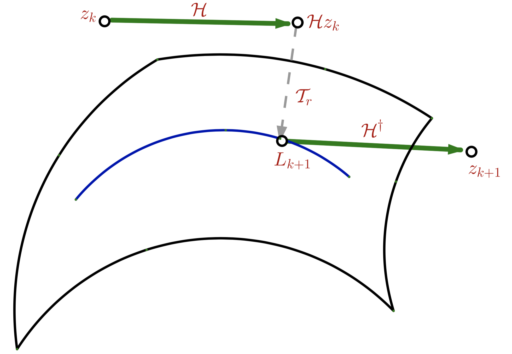
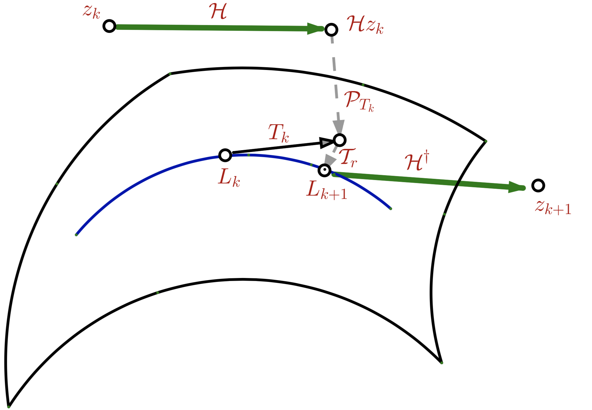
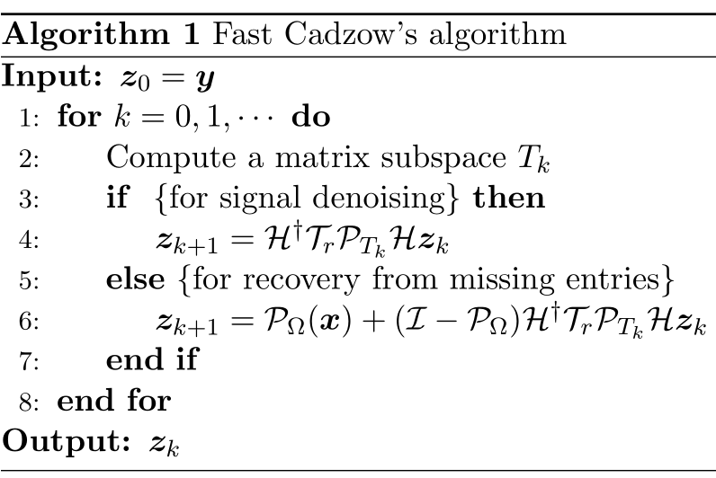
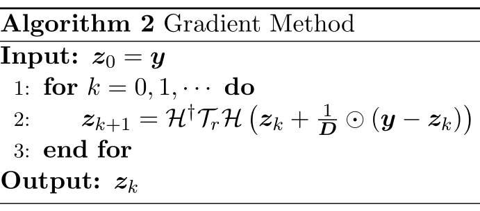
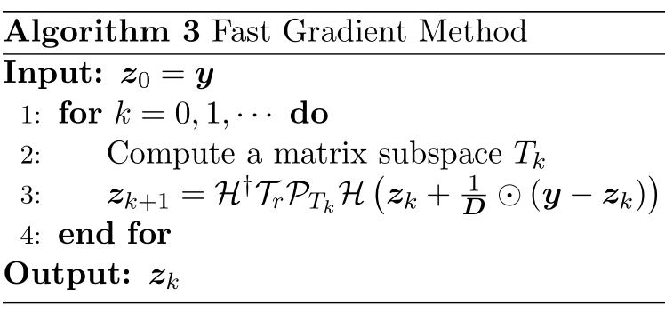

写在前面
最近又看了大牛Jian-Feng Cai的系列文章，先占一个坑，这个与以前的Cadzow算法有关系，以后慢慢补充大牛的其他文章。
符号介绍
考虑下面一维信号含噪模型
y=s+e
Cadzow去噪法基于干净信号s的Hankel矩阵低秩性质进行截断奇异值分解。首先对复信号z进行Hankel化（Hankelization）
Hz=⎣⎢⎢⎢⎢⎢⎢⎡z0z1z2⋮zL−1z1z2z3⋮zLz2z3z4⋮zL+1⋯⋯⋯⋮⋯zK−1zKzK+1⋮zN−1⎦⎥⎥⎥⎥⎥⎥⎤
其逆过程记为H†，对给定矩阵Z∈CL×K进行反对角平均。记第a个反对角线上元素个数为
wa=#{(i,j)∣i+j=a,0≤i≤L−1,0≤j≤K−1}
去Hanekl化得到的向量H†Z的第a个元素为
[H†Z]a=wa1i+j=a∑[Z]ij
注意： H†H=I为恒等映射，而PMH=HH†为矩阵到Hankel矩阵空间MH的投影。
Cadzow算法
前面提到Cadzow去噪的核心思想，假设rank(Hx)=r≪min(L,K)，而rank(Hy)=min(L,K)。因此从y到x需要进行降秩。令z0=y，通过如下迭代
zk+1=H†TrHzk,k=0,⋯
其中Tr为奇异值分解Z=∑j=1min(L,K)σjujvj∗的截断形式，记秩r矩阵集合为Mr
Tr(Z)=j=1∑rσjujvj∗∈Mr
截断奇异值分解过程可视为矩阵到Mr的投影，记为PMr。
值得注意的是，Cadzow算法是多通道奇异谱分析，且Cadzow算法的第一次迭代与奇异谱分析完全一致。此外，Cadzow算法与交替投影相关。令Zk=Hzk，Cadzow算法的矩阵表示形式如下
Zk+1=PMHPMrZk,k=0,⋯
当观测信号存在缺省值时，能否通过部分信号恢复完整信号？Cadzow算法的一种变体可很好地进行信号恢复。令z0=PΩ(x)迭代如下过程
zk+1=PΩ(x)+(I−PΩ)H†TrHzk,k=0,⋯
其中第二项H†TrHzk用来更新Ωc的未知分量。如果观测信号被高斯噪声扰动，则可以把第一项改为PΩ(H†TrHzk)来消除噪声的影响。
快速Cadzow算法
Cadzow算法图解
zk+1=H†TrHzk,k=0,⋯
该算法里的Hankel化H和逆Hankel化H†是向量与矩阵间的转化，而奇异值分解则是对Hankel矩阵进行操作。从图中可以看见，投影是在对应集合中找到距离最近的点，对应点是投影点。

对于信号z∈Cn，矩阵Hz∈CL×K的奇异值分解计算复杂度在O(N3)。为了加快收敛速度，可以在Hzk做一些改动，使得进行投影PMr时效率更高。那么最直接的方法就是改变矩阵的结构，在特定的子空间进行奇异值分解，利用代数的方法来降低整体迭代的计算复杂度。
快速Cadzow算法图解
zk+1=H†TrPTkHzk
与Cadzow算法相比，快速在于多加了到子空间Tk∈CL×K一个投影PTk，选择合适的子空间可以赋予PTkHzk利于分解的矩阵结构。

Tk的选择
前一个迭代点zk=H†TrPTk−1Hzk−1的秩r部分记为Lk=TrPTk−1Hzk−1，则Lk的简化奇异值分解为Lk=UkΣVk∗，则Tk可通过Lk的行、列子空间的直和来构造
Tk={UkB∗+CVk∗∣B∈CK×r,C∈CL×r}
秩r矩阵形成一个光滑流形，而Tk是流形上点Lk处的切空间。有了子空间Tk后，任意点Z∈CL×K到Tk的投影为
PTk(Z)=UkUk∗Z+ZVkVk∗−UkUk∗ZVkVk∗.
- 第一次迭代设置T0∈CL×K，也就是说快速Cadzow算法与Cadzow算法第一步是一致的。
- 第k+1次迭代点的投影子空间Tk都是依赖第k次迭代点由奇异值分解得到正交子空间直和，这也解释了快速Cadzow算法图上的Tk为Lk的切空间。
- 当Lk具有近似Hankel矩阵结构时，HH†Lk≈Lk且Lk∈Tk，有PTkHzk≈Hzk，由此Hzk到Tk的投影能捕获其最大的能量。
算法复杂度
与矩阵TrHzk∈CL×K的奇异值分解相比，通过到Tk的投影，矩阵TrPTk−1Hzk−1可化成2r×2r的奇异值分解。将快速Cadzow算法分解为三步：
⎩⎪⎪⎨⎪⎪⎧Wk=PTkHzkLk+1=TrWkzk+1=H†Lk+1.
令Hk=Hzk，得到到Tk的投影点
Wk=UkUk∗Hk+HkVkVk∗−UkUk∗HkVkVk∗=UkUk∗HkVkVk∗+UkUk∗Hk(I−VkVk∗)+(I−UkUk∗)HkVkVk∗=UkGVk∗+UkB∗+CVk∗
其中
GBC=Uk∗HkVk=(I−VkVk∗)Hk∗Uk=(I−UkUk∗)HkVk
对B和C进行QR分解
BC=(I−VkVk∗)Hk∗Uk=Q1R1=(I−UkUk∗)HkVk=Q2R2
则Q1⊥Vk,Q2⊥Uk，且
Wk=UkGVk∗+UkR1∗Q1∗+Q2R2Vk∗=[UkQ2][GR2R1∗0][VkQ1]∗=([UkQ2]UG)ΣG([VkQ1]VG)∗
其中涉及一个2r×2r矩阵的奇异值分解
[GR2R1∗0]=UGΣGVG∗.
因此总的计算复杂度为O(Nr2+NrlogN+r3)，空间复杂度为O(Nr)。
算法流程图

梯度方向
将Cadzow算法重新表示为
Zk+1=PMHPMrZk=PMHPMr(Zk+t(Y−Zk)),t=0,
其中Zk=Hzk和Y=Hy=H(x+e)，则Cadzow算法可表示为一类投影梯度方法，其对应的优化问题为
min21∥Z−Y∥F2s.trank(Z)≤r and Z is Hankel
由于Hankel矩阵端点效应，考虑如下重加权优化问题
min21∥W⊙(Z−Y)∥F2s.trank(Z)≤r and Z is Hankel
其中权值矩阵W为
W=H(w0,⋯,wN−1)=⎣⎢⎢⎢⎢⎢⎢⎢⎢⎢⎢⎢⎢⎡12131⋮⋮2131⋮⋮⋮31⋮⋮⋮31⋮⋮⋮3121⋮⋮31211⎦⎥⎥⎥⎥⎥⎥⎥⎥⎥⎥⎥⎥⎤.
令步长为1，则投影梯度法表示为
Zk+1=PMHPMr(Zk+W⊙(Y−Zk)).
记1/D=[1/w0,⋯,1/wN−1]⊤，Cadzow算法对应的梯度算法如下

若引入投影子空间，则可得到快速Cadzow算法对应的快速梯度算法。

小结
下面会继续看一些低秩Hankel矩阵相关的文章。
References